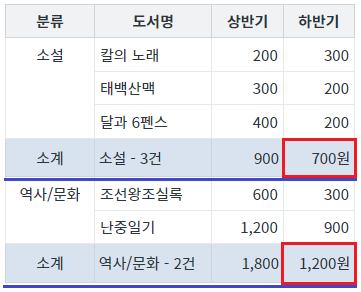
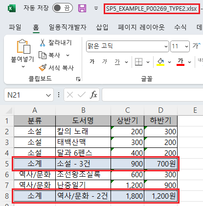

GridView의 엑셀 다운로드(함수 'advancedExcelDownload')에서 첫 번째 인자 'options'의 'useSubTotalData' 옵션 설정 예제입니다. 옵션 'useSubTotalData'은 엑셀에 'subTotal'(소계)의 데이터를 브라우저에 표시된 값으로 출력할지 여부를 결정합니다. 'useSubTotalData'를 'true'로 설정하지 않고 'subTotal' 컬럼의 표현식(속성 'expression')에 사용자 정의 함수를 호출하면, 엑셀 생성 시 오류가 발생합니다.
엑셀 다운로드 - 기본 동작
엑셀 다운로드 - subTotal의 값을 브라우저에 표시된 값으로 출력하기
STEP1. 초기 상태 확인하기
GridView에 서브토탈(소계)가 적용되어 있습니다. 컬럼 '하반기'의 소계 영역 값은 컬럼의 합산 금액에 "#,###" 서식을 적용하고 금액 단위인 "원"을 붙여 표시되었습니다. 이 값은 컬럼의 'expression' 속성에서 사용자 정의 함수를 호출해 생성되었습니다.
그림 1.브라우저(Chrome) 실행 예시

STEP2. 버튼 엑셀 다운로드 - 기본 동작을 클릭합니다.
엑셀 다운로드가 되지 않고 서버에서 오류 메시지가 전달됩니다. 영역 [로그 확인]에 출력된 로그를 확인합니다. ----------------------------------------------------------------- 로그 예시 [03:23:35] 엑셀 다운로드 오류 발생 : [D301]Excel 생성도중 오류 ----------------------------------------------------------------- (브라우저의 개발자 도구 콘솔에도 로그가 출력되며, 반환된 객체를 확인할 수 있습니다.)
STEP1. 초기 상태 확인하기
GridView에 서브토탈(소계)가 적용되어 있습니다. 컬럼 '하반기'의 소계 영역 값은 컬럼의 합산 금액에 "#,###" 서식을 적용하고 금액 단위인 "원"을 붙여 표시되었습니다. 이 값은 컬럼의 'expression' 속성에서 사용자 정의 함수를 호출해 생성되었습니다.
그림 2.브라우저(Chrome) 실행 예시
STEP2. 버튼 엑셀 다운로드 - subTotal의 값을 브라우저에 표시된 값으로 출력하기을 클릭합니다.
엑셀 파일 "SP5_EXAMPLE_P00269_TYPE2.xlsx"이 다운로드 됩니다.
STEP3. 실행된 결과를 확인합니다.
다운로드 된 엑셀 파일 'SP5_EXAMPLE_P00269_TYPE2.xlsx'을 실행합니다. 서브토탈 영역의 출력 값을 확인합니다. 브라우저에 표시된 값과 동일하게 출력됩니다.
그림 3.다운로드된 엑셀(2021) 파일 예시

원하는 시점에 GridView의 함수 'advancedExcelDownload' 호출 스크립트를 작성합니다.
[필수] options.fileName
<String:Y> 파일명
[필수] options.useSubTotal
<String:N> [default: false, true] 다운로드시 SubTotal을 출력 할지 여부 ("true"인경우 출력, "false"인경우 미출력), expression을 지정한 경우 avg,sum,min,max,targetColValue,숫자를 지원 함.
[필수] options.useSubTotalData
<String:N> [default: 없음] 기본은 서버에서 계산된 결과를 출력하지만 useSubTotalData="true"시 브라우저에 출력된 subTotal 데이터를 출력함.
[선택] options.useXHR
<String:N> [default: false, true] XHR 방식으로 서버에 전송할지의 유무. true로 지정하지 않으면 Form Submit방식으로 데이터를 전송합니다. 서버에서 엑셀 생성 중 오류가 발생하여 오류 코드를 전달한 경우 옵션 'onFailureCallback'에서 후처리를 위해 true로 설정.
[선택] options.onFailureCallback
<Function:N> [default: 없음] 요청 실패 시 호출할 callback 함수.
[소스 코드 예시]
//예제 파일의 스크립트 "scwin.btn_ex2_onclick"를 참고하세요. var jsnOptions; jsnOptions = { fileName: "SP5_EXAMPLE_P00269_TYPE2.xlsx", // [필수] 엑셀의 파일명 useSubTotal: "true", // [필수] subTotal 표시 useSubTotalData: "true", // [필수] subTotal의 값을 브라우저에 표시된 값으로 출력하기 useXHR: "true", // 서버에서 엑셀 생성 중 오류가 발생하여 오류 코드를 전달한 경우 옵션 'onFailureCallback'에서 후처리를 위한 설정. onFailureCallback: scwin.avExcelDownload_error_callback // 서버에서 엑셀 생성 중 오류가 발생한 경우 후처리 함수. 옵션 'useXHR'이 true로 지정되어야 사용할 수 있습니다. }; // GridView "grd_exam1"의 엑셀 다운로드 실행 grd_exam1.advancedExcelDownload(jsnOptions);
// options.onFailureCallback 함수 정의 예시 /** * GridView의 함수 'advancedExcelDownload' 호출 시 서버에서 오류가 발생하면 호출되는 함수 * 함수 'advancedExcelDownload'의 첫 번째 인자의 'onFailureCallback' 속성에 지정. * @param {string} arg1 Request URL * @param {object} arg2 엑셀 생성 중 오류 정보가 담긴 JSON 객체. * @param {string} arg2.errorCode 오류 코드 */ scwin.avExcelDownload_error_callback = function (arg1, arg2) { // arg1 값 예시) '/websquare/xmlToExcel2.wq' // arg2 값 예시) {errorCode: 'D301'} // 로직 작성 };
options.fileName
options.useSubTotal
options.useSubTotalData
options.useXHR
options.onFailureCallback
[웹스퀘어5 SP5 개발 가이드] GridView
링크 : https://docs1.inswave.com/sp5_user_guide/bc10c1b82c9a2a0b#e1c4658baf7e726f
[웹스퀘어5 SP5 개발 가이드] GridView → Excel 다운로드
링크 : https://docs1.inswave.com/sp5_user_guide/bc10c1b82c9a2a0b#9fb910628c27d550